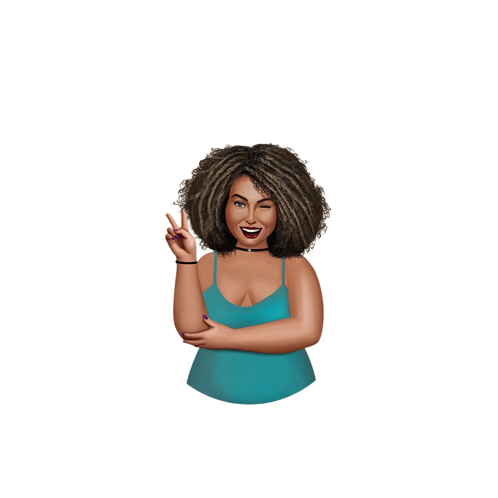
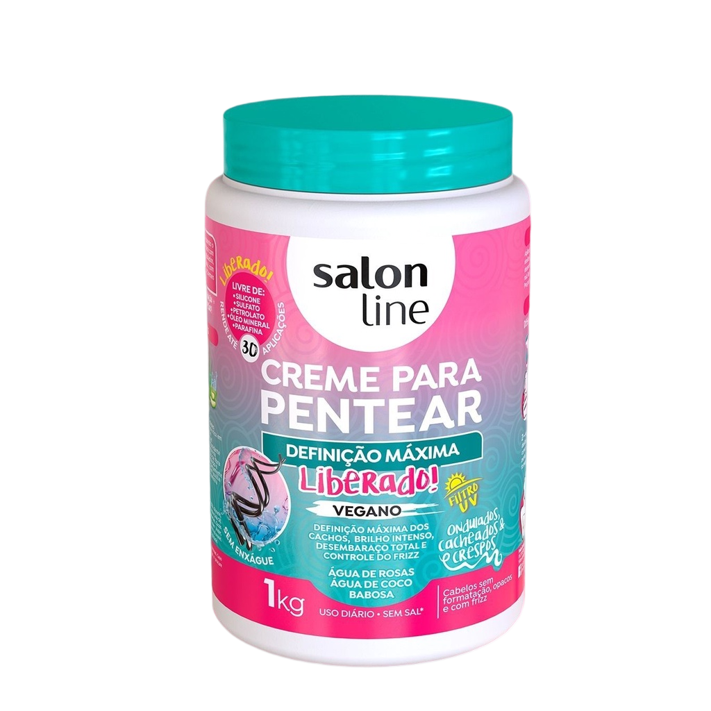

TIPO 3B

O cabelo cacheado 3B tem cachos definidos e menores do que o 3A.
Além disso, o cabelo é mais volumoso e pode sofrer com frizz.
As pontas do cabelo com cachos 3B são mais secas do que a raiz.
Te indicamos então: Salon Line Definição Máxima
Água de rosas: Rica em vitamina A e com propriedades antioxidantes, o ativo hidrata e fortalece o cabelo. Além disso, garante brilho, selamento das pontas duplas e cabelo macio.
Água de coco: Rica em vitaminas e sais minerais, repõem os nutrientes dos fios e potencializa a hidratação, garantindo um cabelo sedoso, brilhante e sem frizz. Auxilia também no crescimento saudável e no fortalecimento das fibras capilares.
Babosa: Com propriedades regeneradoras e rica em aminoácidos e vitaminas para os fios, é um excelente antioxidante natural que atua na reestruturação das fibras capilares, hidratando e selando os fios. Também auxilia no combate contra a queda. <3
